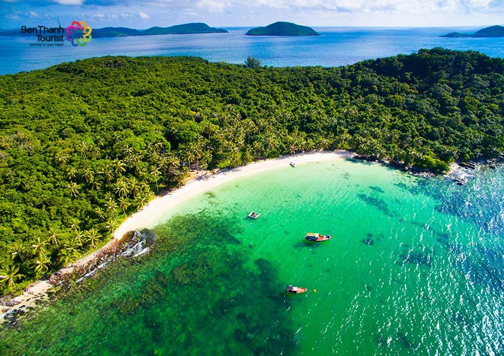

10 thị trấn xinh đẹp nhất đừng bỏ lỡ check in khi du lịch Luxembourg
Luxembourg chỉ có diện tích 2.586 km2, nghĩa là đất nước này chỉ lớn hơn thành phố Hồ Chí Minh một chút thôi. Tuy nhiên, uy quyền của Luxembourg lại không hề nhỏ, bởi đây là là nơi được Liên minh châu Âu đặt nhiều trụ sở hành chính quan trọng như Tòa án châu Âu, Văn phòng Kiểm toán châu Âu, Ngân hàng đầu tư châu Âu... Vì thế, được bao quanh bởi những đất nước láng giềng khổng lồ như Đức, Bỉ và Pháp, những Luxembourg không hề bị lép vế.
Thị trấn Clervaux
Thị trấn Clervaux nằm ở phía bắc Luxembourg. Khi tới điểm du lịch Luxembourg này bạn sẽ được chiêm ngưỡng cảnh núi rừng hùng vĩ bao lấy khu thị trấn được xây dựng theo lối những tòa lâu đài cổ xưa. Hầu hết những ngôi nhà nơi đây đều được khoác lên mình những chiếc áo trắng tinh như tuyết, trông vô cùng cổ kính.
Luxembourg chỉ có diện tích 2.586 km2, nghĩa là đất nước này chỉ lớn hơn thành phố Hồ Chí Minh một chút thôi. Tuy nhiên, uy quyền của Luxembourg lại không hề nhỏ, bởi đây là là nơi được Liên minh châu Âu đặt nhiều trụ sở hành chính quan trọng như Tòa án châu Âu, Văn phòng Kiểm toán châu Âu, Ngân hàng đầu tư châu Âu... Vì thế, được bao quanh bởi những đất nước láng giềng khổng lồ như Đức, Bỉ và Pháp, những Luxembourg không hề bị lép vế.
Thị trấn Clervaux
Thị trấn Clervaux nằm ở phía bắc Luxembourg. Khi tới điểm du lịch Luxembourg này bạn sẽ được chiêm ngưỡng cảnh núi rừng hùng vĩ bao lấy khu thị trấn được xây dựng theo lối những tòa lâu đài cổ xưa. Hầu hết những ngôi nhà nơi đây đều được khoác lên mình những chiếc áo trắng tinh như tuyết, trông vô cùng cổ kính.

Luxembourg chỉ có diện tích 2.586 km2, nghĩa là đất nước này chỉ lớn hơn thành phố Hồ Chí Minh một chút thôi. Tuy nhiên, uy quyền của Luxembourg lại không hề nhỏ, bởi đây là là nơi được Liên minh châu Âu đặt nhiều trụ sở hành chính quan trọng như Tòa án châu Âu, Văn phòng Kiểm toán châu Âu, Ngân hàng đầu tư châu Âu... Vì thế, được bao quanh bởi những đất nước láng giềng khổng lồ như Đức, Bỉ và Pháp, những Luxembourg không hề bị lép vế.
Thị trấn Clervaux
Thị trấn Clervaux nằm ở phía bắc Luxembourg. Khi tới điểm du lịch Luxembourg này bạn sẽ được chiêm ngưỡng cảnh núi rừng hùng vĩ bao lấy khu thị trấn được xây dựng theo lối những tòa lâu đài cổ xưa. Hầu hết những ngôi nhà nơi đây đều được khoác lên mình những chiếc áo trắng tinh như tuyết, trông vô cùng cổ kính.
Bài viết liên quan:
>>Không chỉ có Amsterdam, 5 thành phố nổi tiếng sẽ giúp bạn không chán khi du lịch Hà Lan>>Không chỉ có Amsterdam, 5 thành phố nổi tiếng sẽ giúp bạn không chán khi du lịch Hà Lan
Trụ Sở: Trường Cao Đẳng FPT
Số Điện Thoại: 0123456789
Email: admin@gmail.com